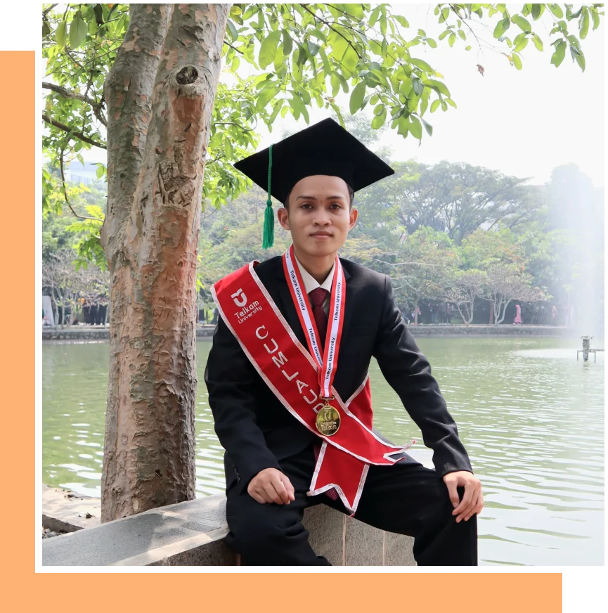

Muhammad Fahmi Hidayat
Information Systems graduate (Cum Laude, GPA 3.68) working in Customer Care Performance and Analytics at Telkomsel, with experience in data analytics, process automation and customer experience.
I work with SQL, Python, Power BI, Tableau and Excel to automate reporting, build dashboards and analyze tNPS and customer interaction data, so teams can act on it.
Skills, and where I used them
- Data analyticsSQL · Python
- KIP and tNPS analysis across 8 Telkomsel service channels, SQL in Huawei DataArts Studio.
- Data visualizationTableau · Power BI · Excel
- 5 end-to-end visualizations for product performance reviews.
- Process automationPython
- Replaced Excel macros and Power Automate, 6 hours to 5 to 10 minutes.
- Machine learningK-Means · GMM · YOLOv8 · GAN
- City segmentation for IndiHome and hospital asset detection research.
- Market researchCompetitor analysis
- 8 ISPs across 503 cities, and 65 opportunities for Telkom's Agree.
- Business processStandardization · Figma
- 4 vendor formats unified, and a ticket dashboard proposed to IT.
- Strategic reportingReports · decks
- Weekly and monthly reports for management, proposal and socialization decks.
- Projects and campaignsTrello · Jira
- bluClass: 200+ attendees and 150+ sign-ups, 15 ambassadors led.
How I work
The same six steps behind every project on this site, from the first question to the report that runs itself.
- 1Define
Agree on the business question and the metric that answers it.
- 2Extract
Pull the right data with SQL, exports or scraping.
- 3Clean
Validate, standardize and reconcile before trusting a number.
- 4Analyze
Look for trends, segments and drivers in Python or Excel.
- 5Visualize
Build a dashboard or deck someone can read in a minute.
- 6Automate
Turn the recurring parts into Python so next month takes minutes.
Experience
- Customer Care Performance and AnalyticsTelkomsel, contract, JakartaOct 2026 to now
- Analyzed KIP (Complaint, Information, Request) interaction data to drive the shift of customer service transactions toward digital self-service channels.
- Monitored performance across 8 channels: GraPARI, eCare, Call Center and self-service (Veronika, GraPARI Express, GraPARI Online, Nindy, IVR).
- Delivered weekly and monthly performance reports on ticket, order and interaction data so management can monitor customer care trends.
- Self Service Operation and EngagementTelkomsel, contract, JakartaJun to Oct 2026
- Automated 3 manual reporting workflows with Python, replacing Excel macros and Power Automate: 97% faster, from 6 hours to 5 to 10 minutes.
- Designed a Figma UI and UX prototype for a trouble ticket dashboard covering 466 GraPARI outlets and 4 vendors, proposed to the IT team.
- Built a dashboard that standardizes transaction data from 4 GraPARI Express vendors into one 23-column format.
- Wrote SQL in Huawei Cloud DataArts Studio to extract KIP Shifting and GraPARI Online payment data on demand.
- Worked with the Veronika knowledge team, the Veronika IT vendor and the Development team.
- Product Acquisition MarketingTelkomsel, intern, JakartaNov 2025 to May 2026
- Automated competitor benchmarking by scraping 8 ISPs across 503 cities with Python: 98% less manual work, 14 days down to 1.
- Built 5 end-to-end visualizations in Tableau, Power BI and Excel for faster product performance reviews.
- Developed a 3-tier city clustering framework with K-Means and GMM for the IndiHome product revamp.
- Maintained 6 Product Knowledge and 6 Product Catalog Matrix documents monthly for 100,000+ sales agents.
- Growth and AcquisitionBCA Digital, intern, JakartaJan to Feb 2024
- Organized the bluClass seminar for 200+ participants, leading to 150+ new app sign-ups.
- Initiated and led the bluAmbassadors program with 15 student ambassadors.
- Analyzed competitor events and found collaboration opportunities with universities and corporate partners.
- Go To MarketTelkom Indonesia, intern, JakartaAug to Dec 2023
- Approached 25+ potential clients by phone, chat and email for the Agree platform.
- Designed 3 slide decks for business plans and project progress.
- Researched 3 agricultural commodities and identified 65 market opportunities.
- Produced 9 Minutes of Meeting documents for cross-department alignment.
- Staff of Academic Research and TechnologyInformation Systems Student Association, Telkom University2022 to 2023
Let's talk about your data.
Open to data analyst, business analyst, CX and product analytics roles.
Download CV